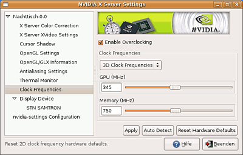

Overclocking
Zum Verständnis dieses Artikels sind folgende Seiten hilfreich:
Wer unter Windows schon seine Grafikkarte übertaktet hat, braucht auf diesen Leistungsschub unter Linux nicht zu verzichten. Dazu sei allerdings gesagt, dass man beim Übertakten vorsichtig sein sollte, da das Erhöhen der Core- und Memory-Geschwindigkeit zu Schäden an der Hardware führen kann. Die erhöhte Temperatur der Karte sollte durch entsprechende Kühlkomponenten kompensiert werden.
Achtung!
Dies könnte zu Überhitzung führen und die Grafikkarte bzw. den Laptop zerstören! Durch leichtfertiges "Herumspielen" kann man die Grafikkarte leicht irreversibel beschädigen. Für eventuell auftretende Schäden wird keine Haftung übernommen.
nVidia-Grafikkarten¶

Hinweis:
Funktioniert nicht mit Grafikkarten ab Fermi Architektur (Geforce ab 400er Serie, Quadro ab 2000)
CoolBits¶
CoolBits ist ein Programmteil des nVidia-Treibers, der zum Über- oder Untertakten der Grafikkarte dient. Viele kennen dieses Feature von Windows, wo ein registry tweak dieses Feature im Treibermenü freischaltet. Dieses Feature gibt es neuerdings auch für Linux. Der Vorteil gegenüber nvclock ist, dass CoolBits von Nvidia geschrieben wurde und einen Test beinhaltet, der die frisch eingestellten Taktfrequenzen testet, bevor sie übernommen werden. Das heißt, wenn die Karte zu hoch getaktet ist, läuft der Test nicht durch. Außerdem kann man durch das Programm den Maximaltakt der Grafikkarte ermitteln lassen.
Voraussetzungen¶
Um den Coolbits Tweak nutzen zu können braucht man eine nVidia-Grafikkarte und einen Grafiktreiber der Version 7664 oder neuer. Im Wiki findet man eine passende Installationsanleitung für nVidia-Treiber. Außerdem sollte man sich den Wiki Artikel durchgelesen haben.
Let's tweak¶
Zuerst öffnet man mit einem Editor [4] die /etc/X11/xorg.conf mit Root-Rechten.
Dort geht man in die "Device section" fügt die Zeile
Option "Coolbits" "1"
ein. Natürlich kann die Bezeichnung je nach Modell abweichen, wichtig jedoch ist, dass man die 1 in Anführungszeichen schreibt.
Section "Device"
Identifier "Videocard0"
Driver "nvidia"
Vendorname "Gigabyte"
Boardname "GeForce6800"
Option "Coolbits" "1"
EndSectionDie neuen Einstellungen werden nach einem Neustart des X Servers wirksam. Dazu meldet man sich ab und startet den X-Server im Anmeldungsmanager mittels Alt + E neu. Das Programm wird aufgerufen mit [3]
nvidia-settings
wodurch sich das Fenster NVIDIA X Server Settings (siehe Screenshot) öffnet.
Danach geht man auf "Clock Frequencies" und es öffnet sich ein Fenster, worin steht, dass Nvidia keine Haftung für das folgende Fenster übernimmt. Erst wenn man die Vereinbarung akzeptiert, kann man den Takt der Grafikkarte einstellen. Wenn man "Autodetect" anklickt, versucht der Treiber den maximal möglichen Takt zu ermitteln. Mit "Apply" werden die Einstellungen übernommen.
nvclock¶
Falls Coolbits nicht funktionieren sollte, bleibt immer noch die Alternative nvclock. nvclock unterscheidet sich von Coolbits dadurch, dass es nicht direkt von nVidia kommt und die Taktfrequenzen nicht getestet werden, bevor sie übernommen werden.
Folgende Pakete müssen installiert werden [1]:
nvclock (universe [2] - nur Konsolenversion )
nvclock-gtk (universe - zusätzliche grafische Oberfläche)
 mit apturl
mit apturl
Paketliste zum Kopieren:
sudo apt-get install nvclock nvclock-gtk
sudo aptitude install nvclock nvclock-gtk
Starten kann man das Tool mit dem Befehl
nvclock_gtk
Wenn man die optimalen Einstellungen gefunden hat, kann man sich mit dem Autostart-Patch und nvclock das passende Startskript schreiben, sodass die Werte beim Booten automatisch gesetzt werden.
AMD Radeon Grafikkarten¶
Für sehr alte Radeon-Karten gibt es das Tool rovclock, das aber seit 2006 nicht mehr weiterentwickelt wird. Seit einiger Zeit kann auch mit dem proprietären fglrx-Treiber übertaktet werden. Informationen dazu gibt aticonfig im Terminal aus.
Rovclock  kann über die offiziellen Paketquellen bezogen werden. Folgendes Paket sollte installiert werden [1]:
kann über die offiziellen Paketquellen bezogen werden. Folgendes Paket sollte installiert werden [1]:
rovclock (universe)
mit apturl
Paketliste zum Kopieren:
sudo apt-get install rovclock
sudo aptitude install rovclock
Frequenzen auslesen¶
Zunächst sieht man nach, ob die Frequenzen richtig ausgelesen werden. Der Befehl
sudo ./rovclock -i
sollte etwa Folgendes liefern:
Radeon overclock 0.1a by Hasw (hasw@hasw.net) Found ATI card, device id: 0x4e44 I/O base address: 0x9000 Xtal: 27.0 MHz Core: 283.50 MHz, Mem: 290.25 MHz, RefDiv: 12
Momentan ist es noch nicht möglich, die XTAL Frequenz automatisch zu erfassen. Wenn also die falschen Core- und Memory-Werte ausgegeben werden, muss man etwas an dem XTAL-Wert drehen bis es stimmt. Versuchen sollte man 2950 oder 1432:
sudo ./rovclock -x 2950 -i
Radeon overclock 0.1a by Hasw (hasw@hasw.net) Found ATI card, device id: 0x4e44 I/O base address: 0x9000 Xtal: 29.50 MHz Core: 309.75 MHz, Mem: 317.13 MHz, RefDiv: 12
Frequenzen setzen¶
Die neuen Werte zu setzen ist relativ einfach. Dies funktioniert mit folgendem Befehl, wobei -c 360 für die zu setzende Core-Frequenz und -m 300 für die Speichertaktung steht:
sudo ./rovclock -c 360 -m 300
Dies sollte dann etwa so aussehen:
Radeon overclock 0.1a by Hasw (hasw@hasw.net) Found ATI card, device id: 0x4e44 I/O base address: 0x9000 Xtal: 27.0 MHz Core: 357.75 MHz, Mem: 297.0 MHz, RefDiv: 12
Autostart¶
Die Frequenzen automatisch bei jedem Start des Systems zu setzen, ist auch nicht weiter schwer. Da rovclock dafür aber root-Rechte benötigt, muss man den Autostart-Patch installieren.
Man öffnet einen Editor [3] mit root-Rechten und fügt dort folgende Zeile ein:
/Pfad_rovclock_Verzeichnis/rovclock -c 370 -m 310
Die Werte -c 370 und -m 310 sind natürlich entsprechend anzupassen.
Die Datei wird unter /etc/autostart/rovclock abgespeichert. Mit chmod werden noch die Rechte im Terminal [3] gesetzt:
sudo chmod a+x rovclock
 Übersichtsartikel
Übersichtsartikel- Erstellt mit Inyoka
-
 2004 – 2017 ubuntuusers.de • Einige Rechte vorbehalten
2004 – 2017 ubuntuusers.de • Einige Rechte vorbehalten
Lizenz • Kontakt • Datenschutz • Impressum • Serverstatus -
Serverhousing gespendet von